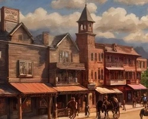

Setting Premise
With such a big world, you may be wondering where to start your legendary journey. For convenience, we recommend starting in the seemingly quiet frontier town of Shepfield. Sandwiched between roaming tribes of centaurs, the violent native city of Cozamataca, and the burgeoning frontier of The Dohosan Union, Shepfield is under a lot of political pressure. Being only a weeks travel from Hounds' Coast also makes it very easy to access the whole setting. Even the monstrous islands of Nekhmetl! As its name suggests, the main industry of Shepfield is sheep herding, which is easier said than done when surrounded by predators like dilophosaurus and vicious gryphons! Even the herbivores of this savannah ecosystem are armed tooth to tail, ready to fight for survival. It's a perfect place to make a name for yourself as a hero, if you ask me. Following are examples of creatures in the region that you might encounter.
